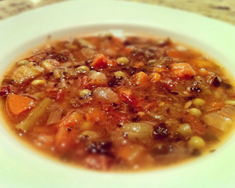

Minestrone with Fresh Basil
Ingredients: Caramelized onions, navy beans, celery, carrots, green beans, peas, yams, fresh garlic, red peppers, green peppers, spinach, zucchini, crushed tomatoes, fresh tomatoes, sun-dried tomatoes, fresh ginger, fresh basil, oregano, thyme, nutmeg, Dijon mustard, natural soup base (no MSG), salt, pepper.